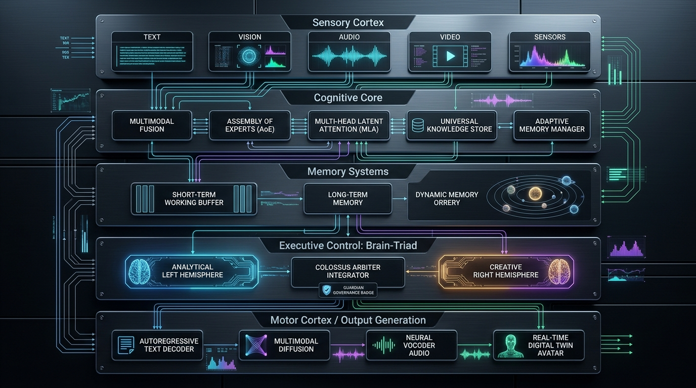
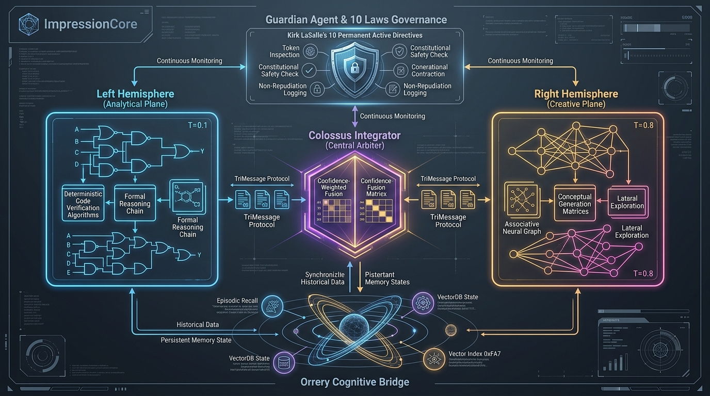
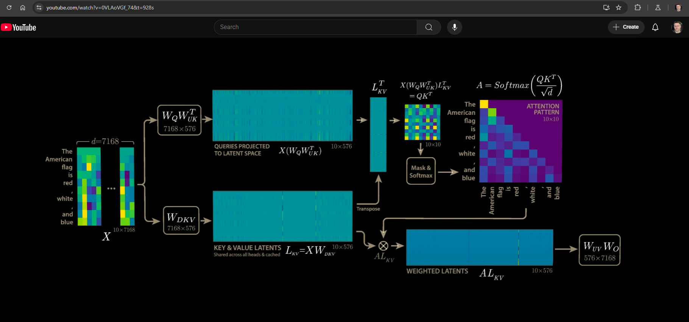

The 5-Layer Brain-Inspired Architecture
ImpressionCore models human and biological cognition through a structured five-layer hierarchy: moving from sensory perception to associative cognition, planetary memory orreries, hemispheric executive control, and embodied motor output.

Deconstructing the Cognitive Hierarchy
Sensory Cortex (Input Processing)
Perceives the external physical and semantic world through specialized modality-specific tokenizers and neural encoders:
- Text Processing: Byte-Pair Encoding (BPE) with custom vocabulary (50,257 tokens).
- Vision Processing: Vision Transformer (ViT-B/32) and CNN patch tokenizers for continuous visual grids.
- Acoustic Processing: Wav2Vec2 and Mel-spectrogram temporal audio feature extraction.
- 3D Spatial Depth: Real-time RGB-D point clouds and skeletal joint tracking via Microsoft Kinect.
Cognitive Core (Association Cortex)
Performs cross-modal latent projection and sparse expert routing to bind disparate sensory streams into unified concepts:
- Cross-Modal Latent Projections: Cross-Attention matrices projecting vision and audio into text token spaces.
- Multi-Head Latent Attention (MLA): Low-rank key-value projections saving 75% memory bandwidth.
- Assembly of Experts (AoE): 4 specialized sub-networks dynamically gated by task complexity.
Memory Systems (Hippocampus & Orrery)
Combines short-term working context with long-term episodic recall and cosmic associative knowledge graphs:
- Short-Term Working Buffer: Sliding-window attention cache for immediate conversational context.
- Long-Term Vector Store: Persistent FAISS / SQLite vector databases for episodic personal recall.
- Dynamic Memory Orrery: 3D celestial knowledge graph mapping semantic distance vectors.
Executive Control (Brain-Triad / PFC)
Arbitrates reasoning through dual hemispheric generation overseen by constitutional alignment:
- Analytical Left Hemisphere: Low-entropy deterministic logic ($T=0.1$) for code, math, and syntax.
- Creative Right Hemisphere: Expansive associative synthesis ($T=0.8$) for metaphor, emotion, and creativity.
- Colossus Central Arbiter: Confidence-weighted fusion validating compliance with Kirk LaSalle's 10 Laws.
Motor Cortex & Sovereign Digital Twin
Transforms unified cognitive states into real-world embodied outputs: autoregressive text tokens, high-fidelity neural speech synthesis with emotional prosody, and real-time 3D avatar animations ("Impressions") of humans, plants, animals, and geological formations.
The Hemispheric Brain-Triad Architecture
Rather than relying on single-temperature stochastic generation, ImpressionCore partitions cognition into specialized hemispheres arbitrated by the Colossus Integrator.

🧠 Analytical Left Hemisphere
Temperature: $T = 0.1$
Operates in a near-zero entropy state. Responsible for formal logical deduction, code synthesis, mathematical validation, and grammatical verification. Guarantees factual reproducibility.
🎨 Creative Right Hemisphere
Temperature: $T = 0.8$
Operates in an expansive associative state. Responsible for lateral thinking, empathetic prosody, novel hypothesis generation, and semantic exploration across disparate knowledge domains.
⚖️ Colossus Central Arbiter
Protocol: TriMessage Consensus
Evaluates both hemispheric candidate vectors through a confidence matrix, verifies compliance with the 10 Laws via the Guardian agent, and issues a unified, non-repudiated response.
Multi-Head Latent Attention (MLA) & Low-VRAM Math
How ImpressionCore achieves massive context lengths on a 4GB graphics card by compressing KV cache tensors into low-rank latent representations.

The KV Cache Bandwidth Problem
In standard Multi-Head Attention (MHA), storing Key-Value tensors for long context windows ($T=4096$) requires gigabytes of memory, causing instant out-of-memory (OOM) failures on 4GB consumer cards.
The ImpressionCore MLA Solution
MLA projects keys and values into a shared compressed latent vector $c_t^{KV} \in \mathbb{R}^{d_c}$ where $d_c \ll n_{heads} \cdot d_{head}$.
k_t^{C} = W^{UK} c_t^{KV}, \quad v_t = W^{UV} c_t^{KV}
k_t = [k_t^{C}, \text{RoPE}(W^{KR} h_t)] \quad \text{(Decoupled RoPE)}
✅ Result: 75% reduction in KV cache memory bandwidth with zero loss in linguistic fidelity.
Assembly of Experts (AoE) Subsystem
Specialized neural modularity: scaling parameter capacity without multiplying runtime compute cost.
Expert 0: Logical
Specialized feed-forward network optimized for formal logic, algorithmic problem-solving, and deterministic execution.
Expert 1: Creative
Trained on rich metaphor, creative writing, conceptual analogies, and intuitive linguistic extrapolation.
Expert 2: Empathy
Specialized in emotional prosody, conversational nuances, supportive dialogue, and interpersonal alignment.
Expert 3: Analytic
Structured data extraction, numerical computation, code parsing, and factual cross-referencing.